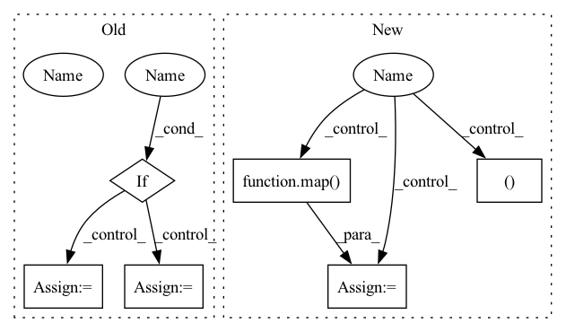

Pattern ID :27571
Before Change
get_attn = lambda: LSHSelfAttention(dim, heads, bucket_size, n_hashes, causal = causal, dropout = lsh_dropout, post_attn_dropout = post_attn_dropout, attn_chunks = attn_chunks, allow_duplicate_attention = lsh_allow_duplicate_attention, attend_across_buckets = lsh_attend_across_buckets, random_rotations_per_head = random_rotations_per_head, num_mem_kv = num_mem_kv, use_full_attn = use_full_attn, full_attn_thres = full_attn_thres, one_value_head = one_value_head, n_local_attn_heads = n_local_attn_heads)
get_ff = lambda: Chunk(ff_chunks, FeedForward(dim, dropout = ff_dropout, activation = ff_activation, mult = ff_mult, glu = ff_glu), along_dim = -2)
if weight_tie :
get_attn = cache_fn(get_attn)
get_ff = cache_fn(get_ff)
blocks = []
After Change
get_ff = lambda: Chunk(ff_chunks, FeedForward(dim, dropout = ff_dropout, activation = ff_activation, mult = ff_mult, glu = ff_glu), along_dim = -2)
get_pkm = lambda: PKM(dim, num_keys = pkm_num_keys)
if weight_tie :
get_attn, get_ff, get_pkm = map( cache_fn, (get_attn, get_ff, get_pkm))
blocks = []
norm_type = ScaleNorm if use_scale_norm else nn.LayerNormIn pattern: SUPERPATTERN
Frequency: 3
Non-data size: 6
Instances Fragment ID: 81927906
Project Name: lucidrains/reformer-pytorch
Commit Name: fbae34221f4e2c2d777551a5e92b8bba5ae2385c
Time: 2020-06-06
Author: lucidrains@gmail.com
File Name: reformer_pytorch/reformer_pytorch.py
M Class Name: Reformer
N Class Name: Reformer
M Method Name: __init__(32)
N Method Name: __init__(30)
M Parent Class: nn.Module
N Parent Class: nn.Module
M File Name: reformer_pytorch/reformer_pytorch.py
N File Name: reformer_pytorch/reformer_pytorch.py
M Start Line: 757
M End Line: 772
N Start Line: 751
N End Line: 789
Before Change
get_attn = lambda: SinkhornSelfAttention(dim, causal = causal, heads = heads, buckets = buckets, kv_buckets = kv_buckets, non_permutative = non_permutative, sinkhorn_iter = sinkhorn_iter, n_sortcut = n_sortcut, temperature = temperature, attn_dropout = attn_dropout, dropout = attn_layer_dropout, attn_sort_net = attn_sort_net)
get_ff = lambda: FeedForward(dim, dropout = ff_dropout, glu = ff_glu)
if weight_tie :
get_attn = cache_fn(get_attn)
get_ff = cache_fn(get_ff)
for _ in range(depth):
layers.append(nn.ModuleList([After Change
get_attn_context = lambda: SinkhornSelfAttention(dim, context_only = True, heads = heads, buckets = buckets, kv_buckets = kv_buckets, non_permutative = non_permutative, sinkhorn_iter = sinkhorn_iter, n_sortcut = n_sortcut, temperature = temperature, attn_dropout = attn_dropout, dropout = attn_layer_dropout, attn_sort_net = attn_sort_net)
get_ff_context = lambda: FeedForward(dim, dropout = ff_dropout, glu = ff_glu)
if weight_tie :
get_attn, get_attn_context, get_ff, get_ff_context = map( cache_fn, (get_attn, get_attn_context, get_ff, get_ff_context))
for _ in range(depth):
layers.append(nn.ModuleList([
PreNorm(nn.LayerNorm, dim, get_attn()), Fragment ID: 81927874
Project Name: lucidrains/sinkhorn-transformer
Commit Name: c2662a20cb783efd3351936cfabc83131060a2a6
Time: 2020-04-10
Author: lucidrains@gmail.com
File Name: sinkhorn_transformer/sinkhorn_transformer.py
M Class Name: SinkhornTransformer
N Class Name: SinkhornTransformer
M Method Name: __init__(20)
N Method Name: __init__(19)
M Parent Class: nn.Module
N Parent Class: nn.Module
M File Name: sinkhorn_transformer/sinkhorn_transformer.py
N File Name: sinkhorn_transformer/sinkhorn_transformer.py
M Start Line: 547
M End Line: 554
N Start Line: 546
N End Line: 576
Before Change
shuffle_after_epoch=random_shuffle,
labels=labels,
)
elif encode_indexes_into_labels :
labels = sorted(Path(entry.name) for entry in os.scandir(data_path) if entry.is_dir())
data = [
(data_path / label / file, label_idx)
for label_idx, label in enumerate(labels)
for file in sorted(os.listdir(data_path / label))
]
files = []
labels = []
// for debugging
true_labels = []
After Change
for label_idx, label in enumerate(labels)
for file in sorted(os.listdir(data_path / label))
]
files, labels = map( list, zip(*data))
if data_fraction > 0:
assert data_fraction < 1, "Only use data_fraction for values smaller than 1."
Fragment ID: 81927905
Project Name: vturrisi/contrastive-learning
Commit Name: 5a1c1e3e03b99bfedfc219fb6eed2b8661264aa3
Time: 2022-04-12
Author: vt.turrisi@gmail.com
File Name: solo/utils/dali_dataloader.py
M Class Name: PretrainPipeline
N Class Name: PretrainPipeline
M Method Name: __init__(15)
N Method Name: __init__(14)
M Parent Class: Pipeline
N Parent Class: Pipeline
M File Name: solo/utils/dali_dataloader.py
N File Name: solo/utils/dali_dataloader.py
M Start Line: 554
M End Line: 598
N Start Line: 540
N End Line: 633